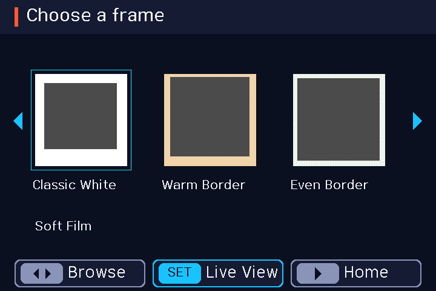
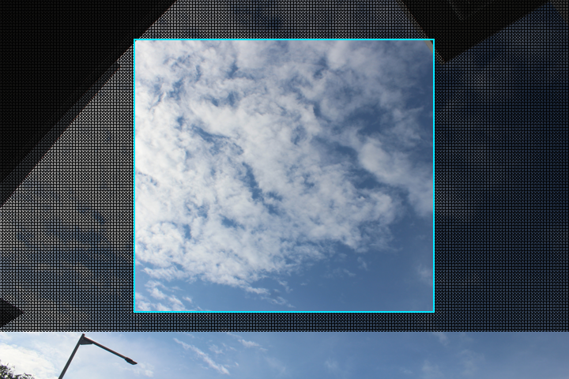
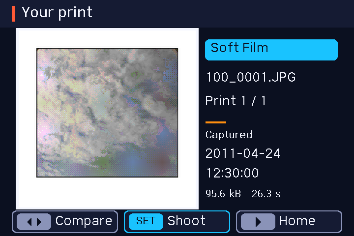
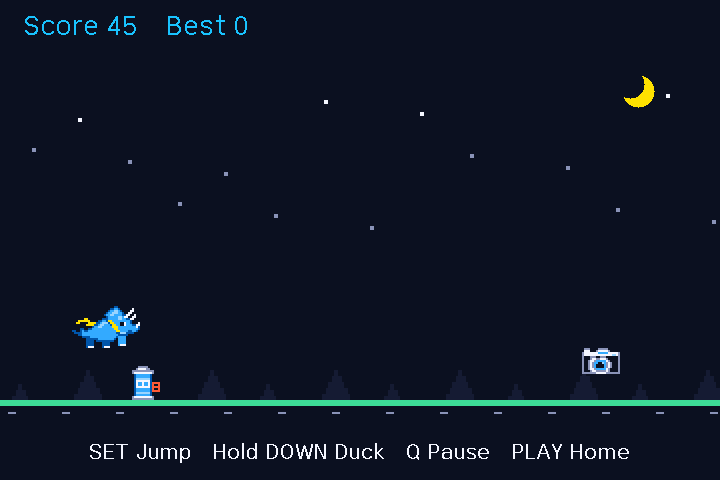

Have fun shooting Polaroid-style
Start with whatever is close by. Your favourite coffee mug or the cat curled up by the camera bag will do. Set the mode dial to P, Av, Tv or M. Choose JPEG, or RAW+JPEG to keep a RAW original too.
These screens use the Canoroid v0.1.0 drawing code with a sample photo and example shot details.

Open Canoroid
From the Canon shooting screen, press the Trash button. The cover appears for one second the first time you open Canoroid after powering on. Open it again and you go straight to the tone menu.

Film tones · Pick a tone and frame
Try Soft Film in gentle morning light or Vivid Color for a shelf of bright toys. Use the arrow keys and SET to choose a tone, then browse the nine frames. Choose No Frame to apply the tone at the original JPEG dimensions.

Live View · Line up your shot
Press SET to enter Live View. Use the guide to compose your picture and press the shutter. Let the camera finish processing before taking the next shot.

Your print · Compare the results
Press left or right to compare the original with your finished picture. Framed prints are saved as separate 1080 × 1080 JPEGs in DCIM/CANOROID. Press SET to shoot again or PLAY to return home.

View Photos · Browse your album
Browse your finished photos. Deleting a picture here removes only the copy Canoroid created.

Game · Take the dinosaur for a run
Waiting for a friend? Open Game for a round of DinoFrame Run. Press SET to jump over film canisters, hold Down to duck under cameras, and press Q to pause when your friend arrives.